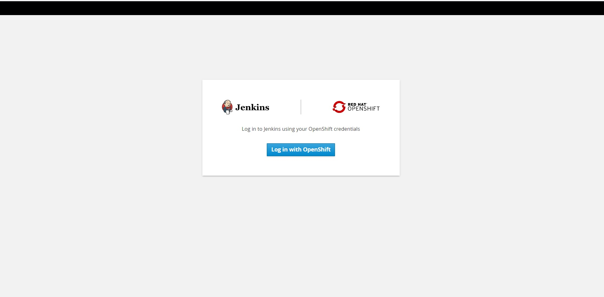
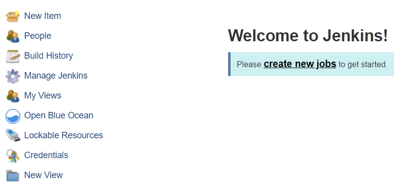
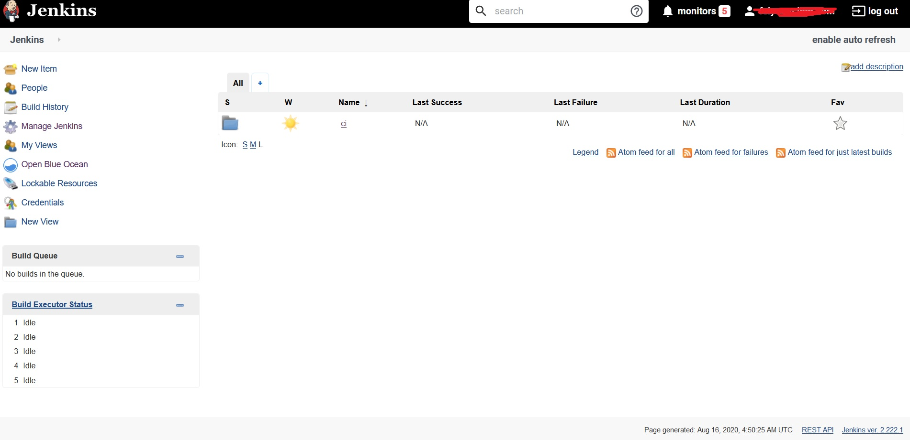
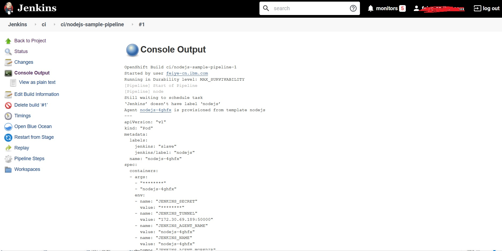
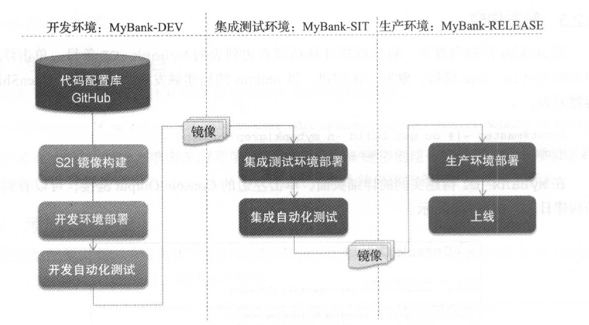

6. 持续集成与部署¶
持续集成（continuous integration ）已经成为现代化软件开发流程中不可缺少的一个环节。持续集成的理念其实并不复杂，就是要对开发出的一个或多个模块的代码频繁地进行编译、构建、集成、测试，尽早发现产品存在的潜在问题，从而减少修复的成本，降低项目的风险。在实践持续集成的过程中往往需要实现软件编译、构建和测试的自动化，这减少了软件研发中手工重复的工作，节省了时间，提升了软件开发的效率。
企业构建容器云的一个重要目的就是提升产品开发的效率和质量。因此，容器云平台在设计时必须考虑如何为应用开发提供持续集成支持。让应用开发团队能更容易实现持续集成，提升开发效率和产品质量。
Jenkins 是目前最流行的持续集成平台。在Jenkins 平台上，用户可以通过定时构建、事件触发式构建、自定义构建等方式快速实现持续集成流程。Open Shift 提供了定制的Jenkins镜像。这个镜像中的Jenkins 默认集成了Open Shift 插件，通过该插件， Jenkins 的构建步骤编排中可以加入OpenShift的平台的调用，实现OpenShift与Jenkins 的集成。
6.1. 部署Jenkins 服务¶
OpenShift项目提供了集成OpenShift 插件的Jenkins 容器镜像及部署模板。通过部署Jenkins的部署模板，用户可以方便快速地部署Jenkins 服务。
OpenShift项目默认提供了两个Jenkins 部署模板： jenkins-ephemeral 和jenkins-persistent 。jenkins-persistent 模板部署需要持久化卷的支持，其部署的Jenkins 服务的数据可以被持久化。jenkins-ephemeral 模板部署的Jenkins 服务的数据在容器退出后将丢失，适合测试使用。本章的关注点为Jenkins 及支持集成， 因此本章均以非持久化的Jenkins 服务为例，而持久化的相关内容将在后面的章节讨论。
以dev 用户登录OpenShift 。
[root@master ~]# oc login -u dev
创建一个名为ci 的新项目部署Jenkins 服务。
[root@master ~]# oc new project ci
下载并导人OpenShift 提供的Jenkins jenkins-ephemeral 。
[root@master ~]# oc create -f https://raw.githubusercontent.com/openshift/origin/master/examples/jenkins/jenkins-ephemeral-template.json
template.template.openshift.io/jenkins-ephemeral created
模板导人完毕后，可以看到Jenkins 模板出现在了ci 项目中。
[root@master ~ J# oc get template
NAME DESCRIPTION PARAMETERS OBJECTS
jenkins-ephemeral Jenkins service, without persistent storage.... 7 (all set) 6
通过Jenkins 模板部署Jenkins 服务。前面章节提到应用部署模板Template，用户可以实现应用的一键式部署。
[root@master ~ J# oc new-app --template=jenkins-ephemeral
--> Deploying template "ci/jenkins-ephemeral" to project ci
Jenkins (Ephemeral)
---------
Jenkins service, without persistent storage.
WARNING: Any data stored will be lost upon pod destruction. Only use this template for testing.
A Jenkins service has been created in your project. Log into Jenkins with your OpenShift account. The tutorial at https://github.com/openshift/origin/blob/master/examples/jenkins/README.md contains more information about using this template.
* With parameters:
* Jenkins Service Name=jenkins
* Jenkins JNLP Service Name=jenkins-jnlp
* Enable OAuth in Jenkins=true
* Memory Limit=512Mi
* Jenkins ImageStream Namespace=openshift
* Disable memory intensive administrative monitors=false
* Jenkins ImageStreamTag=jenkins:2
--> Creating resources ...
route.route.openshift.io "jenkins" created
deploymentconfig.apps.openshift.io "jenkins" created
serviceaccount "jenkins" created
rolebinding.authorization.openshift.io "jenkins_edit" created
service "jenkins-jnlp" created
service "jenkins" created
--> Success
Access your application via route 'jenkins-ci.apps.shared.na.openshift.opentlc.com'
Run 'oc status' to view your app.
部署完毕后查看Pod 的状态可以看见系统正在创建Jenkins 容器。
[root@master - ] # oc get pod
NAME READY STATUS RESTARTS AGE
jenkins-1-4pwbn 1/1 Running 0 6m5s
jenkins-1-deploy 0/1 Completed 0 6m15s
部署需要从网上下载Jenkins 镜像，这个过程将需要一些时间。可以通过oc describe pod 命令观察容器的事件输出。
[root@master - ] # oc describe pod jenkins-1-4pwbn
Jenkins 模板中定义了一个Route，通过Route 中指定的主机名，可以访问部署完毕的Jenkins服务。
[root@master ~]# oc get route
NAME HOST/PORT PATH SERVICES PORT TERMINATION WILDCARD
jenkins jenkins-ci.apps.shared.na.openshift.opentlc.com jenkins <all> edge/Redirect None
当日志显示Jenkins 启动完毕后，打开浏览器访问网址jenkins-ci.apps.shared.na.openshift.opentlc.com ，便可以访问Jenkins 服务的登录页面，如图6-1 所示。
图6-1 Jenkins认证方式
继续并使用OpenShift登录，然后选择“允许选定的权限”选项。 然后，您将看到Jenkins仪表板：
图6-2 Jenkins主页
6.2. 触发项目构建¶
OpenShift 提供的Jenkins 镜像已经默认安装了OpenShift的插件，下面将通过一个简单例子介绍Jenkinks 如何与OpenShift 联动。这个例子将会在Jenkins 中触发一个nodejs程序的S2I 构建。
6.2.1. 创建Jenkins 项目¶
现在真正的工作开始了。 我们需要建立构建软件的管道，但是我们要使用OpenShift内置的构建。以下命令将创建一个构建配置（或“ build config”，它是“ BuildConfig”类型的对象），其中包含我们向OpenShift提供的说明，以告诉它如何构建我们的应用程序。 在这种情况下，我们正在创建一个管道，该管道又具有构建说明：
oc create -f https://raw.githubusercontent.com/openshift/origin/master/examples/jenkins/pipeline/nodejs-sample-pipeline.yaml
刷新Jenkins主页，页面会先显示一个新建的Jenkins Pipeline ci/nodejs-sample-pipeline，如图6-3 所示。
图6-3 创建Jenkins 项目nodejs-sample-pipeline
6.2.2. 触发构建¶
在Jenkins 控制台首页，点击右边列表的ci条目， 页面会跳转至Jenkins/ci页面， 然后将鼠标指针移动到右边列表的ci/nodejs-sample-pipeline 条目，单击浮动菜单上的Build Now 链接，触发一次构建。当Jenkins 的构建触发后，注意观察OpenShift 的容器列表。
在ci构建实例的详细页面，单击左边的Console Output 链接，可以看到详细的构建日志，如图6-4 所示。
图6-4 CI构建实例日志输出
通过输出可以看到Jenkins 触发了项目的一次构建。除了触发OpenShift 的构建， Jenkins 还能触发OpenShift 项目的部署、资源的创建以及项目的配置等功能。通过不同的Build Step 设计，如添加不同的Jenkins 触发器，用户可以灵活设计项目所需的持续集成流程，满足项目持续集成的需要。
6.3. 构建部署流水线¶
一个典型的应用开发场景将经历开发、测试及生产这三个不同的阶段，在不同的环境执行部署和相应的测试。这个从开发到上线的部署流水线，并没有统一的标准，也不是一成不变的。不同的企业、团队，不同阶段定义的过程阶段的数量和内容都可能有所不同。用户可以根据实际需求结合OpenShift及Jenkins 构建满足当前项目的部署流水线。
一个精简的从开发到上线的流程示例如图6-5 所示。MyBank 应用的源代码存放在GitHub 中，通过OpenShift提供的S21 自动化构建镜像，并自动化部署到开发测试环境中。开发环境部署完毕后，触发开发环境自动化测试。自动化测试成功后， Jenkins 把开发环境构建的应用镜像告知集成测试环境，并进行自动化的部署和测试。集成测试完成后， Jenkins 更新开发环境的Image Stream 的镜像指向，并执行生产环境的部署。
图6-5 MyBank 应用的部署流水线
6.4. 本章小结¶
本章介绍了在OpenShift中如何实现持续集成和持续部署。OpenShift 提供Jenkins 服务满足用户对持续集成、交付和部署的需求。通过简单的配置， 可以快速搭建出满足项目需要的持续集成和部署环境。此外， OpenShi位Pipeline 为用户流水线的创建和管理提供了一种直观和方便的管理途径。通过OpenShift Pipeline ，用户可以感受到OpenShi 位在Docker 与Kubernetes 的基础上，极大地提升了用户体验，让用户可以提升从开发到生产的工作效率。